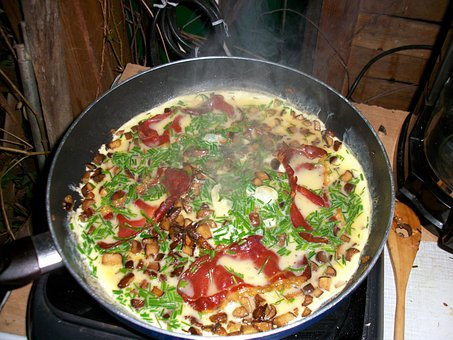

Omelet Recipe
Mushroom Omelet

Description
Quick, easy breakfast standard that will never disappoint.
What makes this version unique is the bit of crunchiness
added by the ramen noodles.
The added flavor pack from the ramen also adds additional
tastiness that is beyond your standard traditional omelet.
Ingredients
- 6 Eggs
- 2 Tablespoons of butter or olive oil
-
1/2 Cup of Red Pepper cut into 1/4 inch pieces
- 1/2 Cup of fresh or canned mushrooms
- 1/2 Cup of shredded cheddar, swiss or mozzarella cheese
- 1 Package of Ramen noodles with your preferred flavor pack
- 1/2 Teaspoon salt
- Black pepper to taste
Steps
-
Whisk the eggs in a bowl until they are frothy, about 30 seconds
-
Heat the butter or oil in a non-stick fry pan over medium heat
-
Pour the eggs into the pan
- Crunch the ramen noodles and spread evenly over the cooking eggs
- Sprinkle the cheese, mushrooms, pepppers and the flavor packet evenly over the whole pan
- Add salt and pepper
- When the edges of the eggs are a golden brown color, slide the omelet onto a plate folding it over as you do